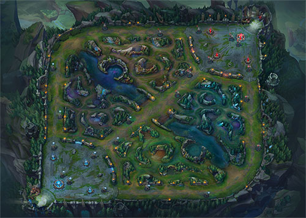
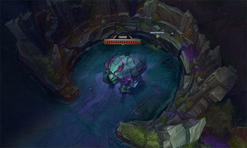

O que é lol
League Of Legends, ou como é mais conhecido por seu público, pela abreviação "lol", é um jogo do estilo MOBA (Multiplayer Online Battle Arena), desenvolvido e publicado pela Riot Games em 2009, e assim como outros jogos nesse estilo (Smite, Dota 2, Heroes of the Storm), consiste em uma batalha entre duas equipes que procuram destruir a base inimiga, utilizando para isso de estratégias e personagens exclusivos.
O lol é totalmente gratuito, ou seja, todos os recursos que você precisa para jogá-lo em alto nível podem ser obtidos sem gastar nada, além de ser popular por rodar em máquinas não tão potentes. Contudo, como a empresa precisa de uma forma de lucrar, há recursos pagos no game, comprados pela sua moeda virtual RP (Riot Points), que pode ser obtida com dinheiro real. Assim, é possível adquirir alguns cosméticos para tornar a gameplay mais divertida, como skins para campeões, skins para sentinelas, emotes, ícones, etc.
[SKIN CHAMPION] [SKIN SENTINELA] [EMOTE] [ÍCONE]
Como o jogo funciona
Objetivo
O lol atualmente possui três modos de jogo: Summoner's Rift, ARAM e Teamfight Tactics. Aqui será dado um foco maior ao primeiro, por se tratar do modo de jogo clássico e o único com modo de partida ranqueado.
Em Summoner's Rift, duas equipes, vermelha e azul, compostas por 5 membros cada, competem entre si para invadir a base inimiga e destruir a estrutura chamada "Nexus".
Para jogar nesse mapa, os jogadores possuem quatro opções de modos de jogo:
| Escolha às cegas | Os jogadores podem formar equipes de quantos membros desejarem e os personagens são selecionados sem que o time inimigo saiba quais foram as escolhas, além de não haver posições pré-definidas |
| Escolha alternada | Os jogadores também podem jogar com quantos amigos quiserem e ambos times podem retirar (banir) 5 campeões cada que não desejam enfrentar, além de saber quais foram as escolhas inimigas e as posições serem pré-definidas pelo jogador antes da partida começar |
| Ranqueada Solo/Duo | Idêntica à estrutura da Escolha Alternada, contudo, os jogadores não podem formar equipes pré-definidas com mais de duas pessoas, fora o fato de ganhar ou perder Pontos De Liga (PDL) no fim da partida dependendo do resultado dela |
| Ranqueada Flexível | Também possui a mesma estrutura da Escolha Alternada e recompensa as vitórias com PDLs, a diferença está na configuração das equipes pré-definidas, que não podem ser compostas por exatamente 4 jogadores |
Conhecimentos gerais
Algo comum para os jogadores inexperientes no estilo MOBA é a dificuldade que sentem no ao começar em um jogo desse estilo. Isso ocorre principalmente porque existe uma gama alta de conhecimentos gerais que você precisa ter para sequer chegar no nível iniciante, e a partir disso começar evoluir no game. Tal fato desanima jogadores novos, que ficam desamparados e acabam desistindo antes de conseguir achar o jogo divertido. Nessa área,será feita uma introdução a esses conteúdos, tendo como foco ensinar aos players iniciantes o que eles precisam saber antes de começar a jogar.
Conhecendo melhor o mapa
O mapa de Summoner's Rift é espelhado, ou seja, exatamente igual para os times azul e vermelho. Assim, as duas equipes dispõem de uma base, três rotas (Top, Mid e Bot), uma selva que permeia as rotas e abriga monstros e um rio que corta o mapa ao meio e contém os dois maiores objetivos neutros do mapa, o Dragão e o Barão.
A questão das rotas, inclusive da selva, será trabalhada com mais profundidade em Guia de Rotas futuramente, portanto, agora vamos nos atentar aos demais fatores do mapa.
Dragões
O dragão é o primeiro grande objetivo a nascer no mapa, surgindo aos 5 minutos de jogo. Após um dragão ser abatido, o próximo sempre nascerá após 5 minutos de sua morte, sendo que o tipo do primeiro e segundo a nascerem são aleatórios. Os dragões podem ser de 4 tipos diferentes.
| Infernal | Concede um aumento percentual de Dano de Ataque e Poder de Habilidade cada vez que é abatido |
| Oceano | Concede um aumento percentual de Regeneração de Vida cada vez que é abatido |
| Nuvens | Concede uma redução percentual do Tempo de Recarga da Ultimate cada vez que é abatido |
| Montanha | Concede um aumento percentual de Armadura e Resistência Mágica cada vez que é abatido |
Após o segundo dragão que nasceu ser abatido, o jogo anunciará qual será o atributo do próximo dragão, o que também definirá qual será a Alma de Dragão desse jogo.
É importante ressaltar alguns detalhes sobre a mecânica dos dragões, que podem acabar sendo um pouco obscuros para jogadores inexperientes:
- O terceiro dragão não poderá ser do mesmo tipo que os dois que vieram antes dele
- A partir do terceiro dragão, todos que nascerem serão do mesmo tipo
- Uma equipe só pode reinvindicar a alma após acumular 4 abates em dragões
- O mapa é modificado conforme o atributo da alma
Por fim, falaremos sobre o que acontece se uma equipe acumular a eliminação de 4 dragões. Existem 5 tipos de almas, 4 para cada tipo de dragão e a alma do dragão ancião.
| Alma Infernal | A cada 3s, seu próximo ataque ou habilidade de dano cria uma pequena explosão em área, causando Dano Adaptativo que escala com Dano de Ataque, Poder de Habilidade e Vida adicionais |
| Alma do Oceano | Causar qualquer dano ativa uma forte regeneração de Vida e recursos por 3s. Dano contra tropas concede uma regeneração menor |
| Alma das Nuvens | Atingir inimigos com habilidades ou ataques reduz o Tempo de Recarga de suas habilidades base |
| Alma da Montanha | Ao ficar sem sofrer dano por 5s, ganha um escudo que dura até ser destruído. A força do escudo escala com Dano de Ataque, Poder de Habilidade e Vida adicionais |
| Alma do Ancião | Após uma equipe acumular a eliminação de 4 dragões, obtendo assim uma das quatro almas disponíveis, o próximo dragão a nascer será o Dragão Ancião. Abater esse dragão concede a equipe que o eliminou um poderoso efeito de combate, que apesar de durar pouco tempo, torna os jogadores que a possuem praticamente indestrutíveis em combate. Assim, ao causar dano a um Campeão inimigo com Vida baixa, esse Campeão será consumido pela ardente Imolação Anciã, que o abaterá instantaneamente |
Arauto do vale
O Arauto do Vale se localiza no covil de cima do mapa, e sua primeira aparição ocorre aos 8 minutos de jogo. Após ser abatido, ele deixa cair no chão o Olho do Arauto, que pode ser coletado exclusivamente pelos jogadores da equipe que o abateram. Assim, após coletar o olho, o jogador possui até 240 segundos (4 minutos) para apertar a tecla 4 do teclado, liberando o arauto para combate.
Após liberado, ele se dirigirá para a estrutura mais próxima da equipe inimiga e a cabeceará, dando um dano considerável a estrutura e consequentemente perdendo parte de sua vida. Se a torre for destruída e o arauto continuar vivo, ele se dirigirá para a próxima estrutura e fará a mesma coisa, até que seja abatido pela equipe inimiga.
É importante ressaltar que o arauto possui um ponto fraco: o olho nas suas costas, que abre após certo tempo em combate e se golpeado por um jogador, causa um dano considerável ao monstro. Além disso, o arauto só renascerá 6 minutos após ser abatido pela segunda vez, e irá sumir definitivamente aos 20 minutos de partida, quando o Barão de Na'Shor surgir.
Barão de Na'Shor
Aos 20 minutos de partida, o Arauto do Vale retorna ao vazio, dando lugar no covil para o Barão de Na'Shor. Atualmente, o barão divide a posição de objetivo neutro mais importante com o dragão ancião, e qual dos dois é mais relevante depende de inúmeros fatores, contudo, a maioria dos jogadores ainda da preferência ao Dragão Ancião.
Assim, mesmo não sendo o mais importante, o efeito concedido por abater o barão ainda é decisivo para muitas partidas. Dessa forma, os jogadores da equipe que o abater, que estiverem vivos quando ele for eliminado, obterão por 210 segundos (3 minutos e meio) um retorno acelerado à base, que reduz o tempo de canalização de 8 segundos para 4 segundos, um aumento no Dano de Ataque e Poder de habilidade e o principal: Um grande aprimoramento nos atributos das tropas aliadas.
Desse modo, como o objetivo final de uma partida de lol é destruir o nexus, uma equipe que pode capitalizar mais rápido o ouro obtido, por meio de uma volta a base acelerada, que possui um buff em seus atributos de força e além de tudo têm tropas fortalecidas, consegue mais facilmente destruir as estruturas inimigas e invadir sua base para finalizar a partida.
Estruturas
Como já foi dito anteriormente, o objetivo final de uma partida é a destruição da estrutura Nexus. Contudo, para atingir esse objetivo os jogadores terão alguns obstáculos além dos player rivais, como torres e inibidores.
As torres se distribuem de forma igual pelas três rotas, sendo 3 torres para cada rota, além de 2 torres protegendo o nexus. Apesar de serem um obstáculo, as torres recompensam a equipe que as destruir com ouro, tornando-as um objetivo muito importante dentro da partida. Aqui estão algumas características sobre elas:
- A primeira linha de torres a serem destruídas são fortificadas por barricadas, que duram até os 14 minutos de jogo. As barricadas são como "estágios" da vida de uma torre, e a cada vez que o jogador causar o dano necessário para atingir esse estágio, ele é recompensado com ouro extra (esse fator de barricadas vem tornando o Arauto do Vale muito importante no patch atual, pois sua cabeçada dá para equipe que o lançou duas barricadas instantaneamente)
- Todas as torres possuem 1095 de alcance de visão e 775 de alcance de ataque
- A visão delas é do tipo real, ou seja, campeões ou habilidades não podem ser camufladas no alcance dela, fornecendo visão para o time proprietário da torre
- Uma torre é invulnerável até que sua antecessora seja destruída
- O ataque de uma torre é cancelado no meio caso ela seja destruída antes de atingir um inimigo
- As torres são fortalecidas com 100 de armadura e resistência mágica quando atacada sem tropas inimigas por perto
- As torres que protegem o nexus são invulneráveis caso todos os inibidores estejam em pé
Os inibidores ficam localizados na base e são protegidos pela última torre da rota. Eles não possuem a capacidade de atacar um jogador, mas sempre renascem após 5 minutos de sua destruição. Além disso, assim como o próprio nome sugere, um "inibidor" inibe a produção de minions, ou seja, destruir um inibidor confere a equipe que o destruiu uma produção de super minions pelas próximas 8 ondas de minions naquela rota.
Um detalhe interessante é que se todos os 3 inibidores de um time forem destruídos, as ondas de minions adversárias passarão a enviar dois super minions por rota.
Minions
Os minions são um fator muito importante no mapa, e o controle adequado de suas ondas (em inglês "waves", como é mais conhecido pelos jogadores) muitas vezes define o bom jogador do mediano. Eles começam a surgir do nexus aos 1:05 minutos de partida, e continuam a nascer de 30 em 30 segundos até o fim dela.
As ondas de minions, ao surgirem, se dirigem ao mesmo tempo para as três rotas, sendo que a primeira wave contém 3 minions guerreiros e 3 minions magos, e na terceira, além destes, um minion canhão também é enviado. A regra permanece em ciclo para o resto da partida: duas waves com 6 minions e a terceira com o extra do canhão, e só mudará a partir dos 35min de partida, quando todas as waves passarão a ter consigo o minion canhão.
No geral existem 4 tipos diferentes de tropas. Assim, segue informações gerais sobre cada uma delas:
- Minion corpo-a-corpo: São resistentes e fazem a linha de frente, porém não causam muito dano. Oferece 21 de ouro caso seja abatido.
- Minion mago: São menos resistentes, ficando atrás e causando dano à distância. Oferece 14 de ouro caso seja abatido.
- Minion canhão: É mais resistente e causa mais dano que os outros dois, ficando posicionado no meio da wave. Oferece 60 de ouro caso seja abatido, valor que aumenta em 3 toda vez que é convocada até um máximo de 90.
- Super minion: É muito mais resistente e causa muito mais dano que os demais minions, e começa a surgir caso um inibidor seja destruído. Oferece 60 de ouro caso seja abatido, que aumenta em 3 a cada 90 segundos.
É importante ressaltar que o ouro obtido ao abater um minion só é conferido ao jogador caso ele dê o golpe final nele. Dessa forma, ao abater as tropas (ou "farmar", como é popularmente chamado pelos players), um jogador que acerta muitos golpes finais acaba obtendo mais ouro que jogadores que não tem tanta prática nisso, tornando-se uma habilidade diferencial para ficar forte e vencer partidas.
Além disso, os minions são uma ferramente imprescindível para absorver o dano das torres (ou "tankar"), permitindo que os jogadores batam nelas sem tomar dano, e também para auxiliar em trocas de dano entre jogadores, principalmente no começo de jogo, onde todos ainda estão muito fracos e o dano causado pelos minions se torna muito relevante.
Algo que não foi comentado é o chamado "Controle de Wave", um conceito mais avançado que permite aos jogadores manipular os minions para criar vantagens ao seu favor. Não se preocupe pois isso e muito mais será trabalhado melhor no Guia de rotas.